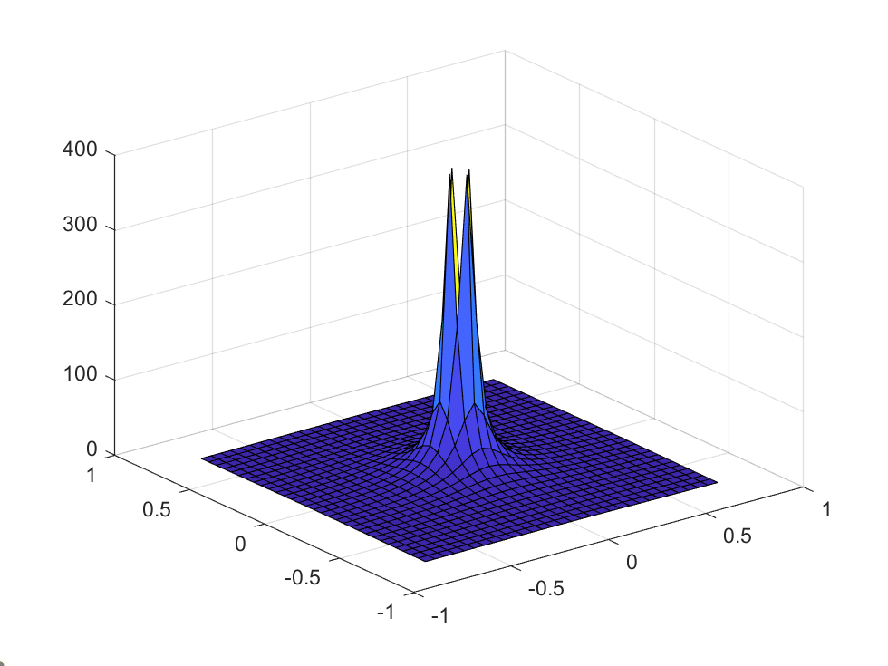
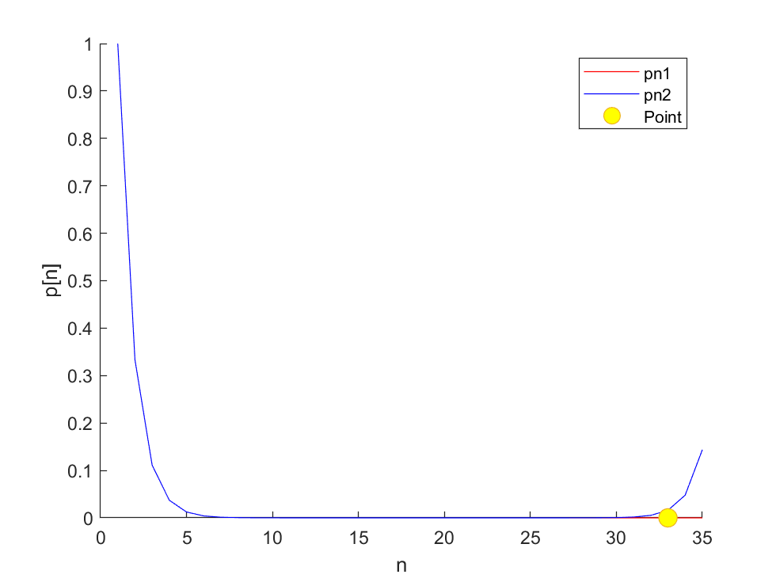

Matlab第四周插值问题
Matlab选修作业记录（其他的简介懒得写了/2025-01-25/）
北邮Matlab选修 Week 4 插值问题（两道题）
绘图
问题描述
一个学校想要建一个钟楼，需要对其进行建模，将方程$ z=\frac{1}{x^2+y^2} $ 作为模型，编写一个绘制钟楼的脚本。$ x $、$ y $的取值范围是$ -0.75 \leq x \leq +0.75 $，数据间隔为$0.05$。设置坐标轴，使$ x $、$ y $的所有区域可见。并且$z$的范围在0到300之间。使用surf()绘制图像。
程序设计
%question1.m
function question1()
x_min = -0.75;
x_max = 0.75;
y_min = -0.75;
y_max = 0.75;
interval = 0.05;
x = x_min:interval:x_max;
y = y_min:interval:y_max;
[X, Y] = meshgrid(x, y);
Z = 1 ./ (X.^2 + Y.^2);
Z_max = 300;
xlim([x_min x_max]);
ylim([y_min y_max]);
zlim([0 Z_max]);
surf(X, Y, Z);
end
计算结果
>> question1

机器零件刷漆用料计算问题
问题描述
编写程序讨论下面两种数列生成算法的稳定性
数列$P_n=[1,\frac{1}{3},\frac{1}{9},\frac{1}{27},\cdots]$
- 设$P_0=1$，递推公式$P_n=\frac{1}{3} \times P_{n-1}$
- 设$P_0=1$，$P_1=\frac{1}{3}$，递推公式$P_n=\frac{10}{3} \times P_{n-1} - P_{n-2}$
程序设计
%question2.m
function question2()
p0 = 1;
N = 35;
tolerance = 0.01;
flag2 = N + 1;
pn1 = zeros(1, N);
pn1(1) = p0;
for n = 1:N-1
pn1(n+1) = (1/3) * pn1(n);
end
pn2 = zeros(1, N);
pn2(1) = p0;
pn2(2) = 1/3;
for n = 1:N-2
pn2(n+2) = (10/3) * pn2(n+1) - pn2(n);
end
for n = 1:N
if abs(pn1(n) - pn2(n)) > tolerance
flag2 = n;
break;
end
end
hold on;
plot(1:N, pn1, 'r');
plot(1:N, pn2, 'b');
plot(flag2, pn1(flag2), 'o', 'MarkerSize', 10, 'MarkerFaceColor', 'yellow');
xlabel('n');
ylabel('p[n]');
legend('pn1','pn2','Point');
end
计算结果
>> question2

最后修改于 2024-08-05